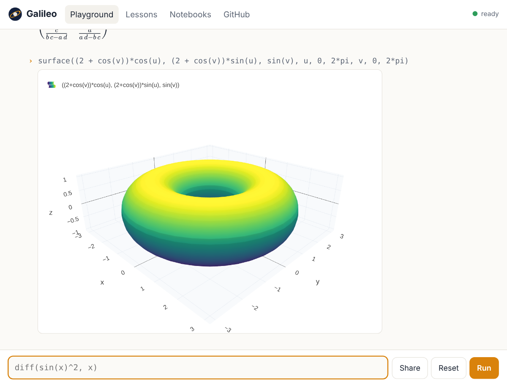

Math you can play with, right in your browser.
Galileo is a small, free computer algebra system. Solve equations, take derivatives, factor big numbers, draw fractals and 3D surfaces, and learn as you go with interactive lessons. Nothing to install: everything runs on your own device.
Try: solve(x^2 - x - 1, x) · factor(2^67 - 1) · mandelbrot(…) · plot3d(sin(x)*cos(y), …)

What it does
Type math the way you would write it. Answers are exact, and every result is shown.
Algebra and calculus
Exact fractions, derivatives, expansion, factoring and simplification.
deriv(x^3*sin(x), x) simplify(sin(y)^2 + cos(y)^2)
Symbolic matrices
Inverses, determinants, LU and solving, with symbols inside.
inv([a b; c d]) det([1 x; x 1])
Plots in 2D and 3D
Functions, parametric curves and surfaces you can rotate and zoom.
surface((2+cos(v))*cos(u), (2+cos(v))*sin(u), sin(v), u, 0, 2*pi, v, 0, 2*pi)
Primes and big numbers
Whole numbers of any size, primality tests and fast factoring.
factor(2^67 - 1) isprime(2^127 - 1)
Learn by doing
Interactive lessons: read, change the code, press Run. Start with Foundations if you like, or jump to whatever catches your eye. School math is enough to begin.
Foundations
Nine lessons from arithmetic to calculus, differential equations and conic sections. Start here.
Linear algebra
Nine lessons for a first course: vectors and matrices, elimination and LU, vector spaces, determinants, least squares and QR, eigenvalues, symmetric matrices and Cholesky, the SVD, and the matrix exponential with the Jordan form.
- Vectors and matrices
- Linear systems and elimination
- Vector spaces, bases and dimension
- Determinants
- Orthogonality, projections and least squares
- Eigenvalues and eigenvectors
- Symmetric matrices and positive definiteness
- The singular value decomposition
- Linear differential equations, the matrix exponential and the Jordan form
Differential equations
Eight lessons for a first course: slope fields and separable equations, linear equations, oscillations and resonance, Laplace transforms with switches and hammer blows, the phase plane, series solutions, Fourier series, and the heat and wave equations.
Probability and statistics
Eight lessons for a first course: describing data, probability by counting and simulation, discrete and continuous distributions, the central limit theorem, confidence intervals, hypothesis tests, and regression.
Multivariable calculus
Seven lessons for Calculus III: contour maps, gradients, optimization and Lagrange multipliers, multiple integrals and the bell curve, vector fields, and the theorems of Green, Stokes and Gauss.
Complex analysis
Eight lessons for a first course: pictures of complex functions, analytic functions, contour integrals, Cauchy's theorem, Taylor and Laurent series, residues, real integrals by residues, and conformal maps with the flow around a wing.
Number theory
Primes, factoring large numbers, algebraic factoring and hunting for identities, modular arithmetic, the cryptography built on them, a lab that searches for new factoring algorithms, and the number field sieve.
Graphs and networks
Three lessons: Euler's bridges and tours, shortest routes, spanning trees, flows and matchings, then scheduling by coloring, PageRank, the rise of the Medici and random graphs.
Random processes
Three lessons: Markov chains and the gambler's ruin, random walks and Brownian motion, then noisy differential equations, option prices and the phase transition of a magnet.
Group theory
Symmetry, cyclic groups, permutations, card shuffles and Lagrange's theorem.
Chaos and fractals
The logistic map, bifurcations, the Lorenz butterfly, the Mandelbrot set and Julia sets.
Mechanics
Seven lessons for a first physics course: Newton's laws with units and air drag, energy and rockets, rotation and the spinning top, orbits and the three-body problem, Lagrangian and Hamiltonian mechanics with the double pendulum, and rotating frames with Foucault's pendulum.
Oscillations and waves
Seven lessons: the harmonic oscillator and resonance, coupled oscillators and normal modes, strings and Fourier series, sound and the Fourier transform, dispersion and wave packets, interference and diffraction of light, and geometric optics with the rainbow.
Reading research papers
Recent papers built from the ground up: quantum gravity from the null cone (arXiv:2611.34924), from black hole entropy to causal diamonds, focusing and the clock states.
Discovering physical laws
Four lessons that find Kepler's and Newton's laws in planet data, then the term Einstein added for Mercury.
Differential geometry
Seven lessons from curves to the Riemann tensor, drawn in interactive 3D.
General relativity
For the adventurous, after differential geometry: nine lessons from flat spacetime to black holes, gravitational waves and the age of the universe.
Two ways to use it online, two to install
Playground
A light REPL with lessons. Works well on a phone.
JupyterLite
Full JupyterLab in the browser with the Galileo kernel. Your notebooks are saved in the browser.
Docker
JupyterLab with the Galileo kernel.
docker run -p 8888:8888 cascala/igalileo
From source
The command-line REPL.
cargo install --git \ https://github.com/cascala/galileo-rs